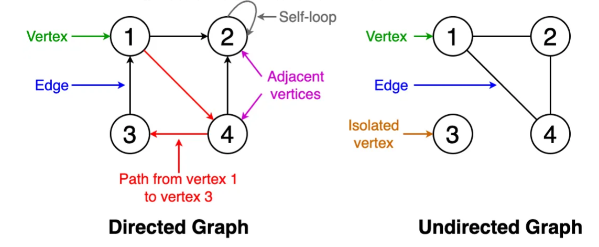
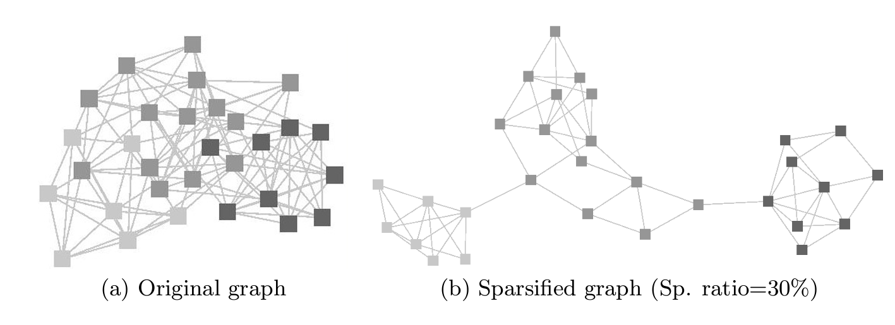

Section 1 - Network Basics#
Introduction to Network Basics#
Networks are powerful tools that allow us to model and understand complex biological systems by representing entities such as genes, proteins, or patients as nodes, and their interactions or relationships as edges.
Graphs#
A graph $G = (V, E)$, is a tuple of a node set $V$ and an edge set $E$. Nodes encapsulate entities of interest, while edges capture the relationships or interactions between these entities. Graphs can be:
directed,
undirected, or
weighted.
The adjacency matrix, symbolized as $A$, represents the connections. For an undirected, unweighted graph with $n$ nodes, $A$ is an $n \times n$ matrix where $A_{ij}$ is 1 if nodes $i$ and $j$ are connected, and 0 otherwise. For a directed graph, $A_{ij} = 1$ if and only if there is a directed edge from $i$ to $j$. For weighted graphs, the value of $A_{ij} \in \mathbb{R}^+$ indicates the strength of the connections.
TCGA-LUAD Project#
Title: The Cancer Genome Atlas Lung Adenocarcinoma (TCGA-LUAD)
Main Focus: Study of lung adenocarcinoma (a common type of lung cancer)
Data Collected: Comprehensive genomic, epigenomic, transcriptomic, and proteomic data from lung adenocarcinoma samples
Disease Types:
Acinar Cell Neoplasms
Adenomas and Adenocarcinomas
Cystic, Mucinous, and Serous Neoplasms
Number of Cases: 585 (498 with transcriptomic data)
Data Accessibility: Available on the NIH-GDC Data Portal
Link: TCGA-LUAD Project Page
Part 1: Gene Expression Network#
Tabular data to graph data#
Our main goal is to learn how to convert tabular data into network data in a way that is robust and reproducible. We will discuss different ways how to define the edges from the tabular data. We will also look at common techniques how to clean the resulting network all the while we are learning functionality of a popular Python package for working with network data, called NetworkX.
By the end of this session you will be comfortable to inspect, analyse and create you own network data for tasks such as protein-protein interaction (PPI), gene regulatory network (GRN) and patient-similarity network (PSN) analysis.
Correlation Matrices#
We will calculate correlation matrices from gene expression data, which will serve as the basis for constructing gene expression networks. The correlation matrix captures the relationships between genes by calculating the correlation coefficient between their expression profiles.
There are a few correlation metrics one could consider:
-
O(n^2) complexity, fast for large datasets
-
O(n^2 log n) complexity, relatively fast but can be slower than Pearson
Absolute biweight midcorrelation
Robust but slower than Pearson and Spearman, suitable for datasets with outliers
Graph Construction#
From the correlation matrix, we will construct a gene expression network where the nodes are genes and the edges represent the strength of the correlation between them. The network will allow us to identify highly connected genes, which are likely to be functionally related.

Network Cleaning#
Networks generated from real-world data often contain noisy or irrelevant connections, which can impact downstream analysis. We will discuss various strategies for cleaning networks, such as removing low-confidence edges, filtering nodes based on their connectivity, and identifying and removing outlier nodes.
Sparsification Methods#
Sparsification is a technique used to reduce the density of a network by removing edges while preserving the overall network structure. We will explore different sparsification methods, such as thresholding based on edge weights or network density, to simplify the network and improve interpretability.

Describing Highly Connected Nodes#
Highly connected nodes, also known as hubs, play a crucial role in network structure and function. We will discuss how to identify and characterise hubs in a network, including their biological relevance.
Part 2: Patient Similarity Network#
In the second half of this exercise we are going to generate two patient similarity networks. One of them is based on the gene expression data we used in Part 1. The other one is based on DNA methylation as a preliminary step for Section 2.